Home / Past papers / MLT End Term / this paper
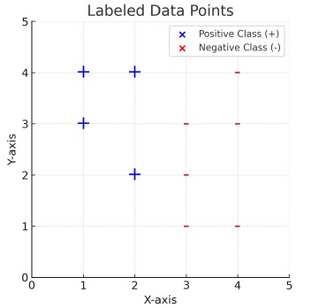
For a given dataset, a 1-Nearest Neighbor (1-NN) and a 3-Nearest Neighbor (3-NN) classifier are applied. Which classifier is likely to exhibit a higher Leave-One-Out Cross Validation (LOOCV) error? In case of tie-breaker, assign a positive class (+) to the data point.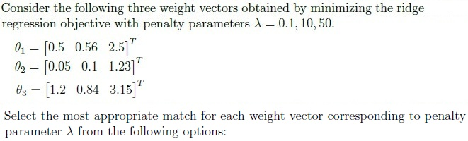
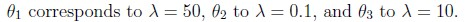
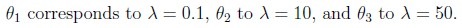
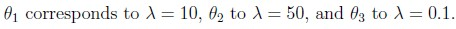
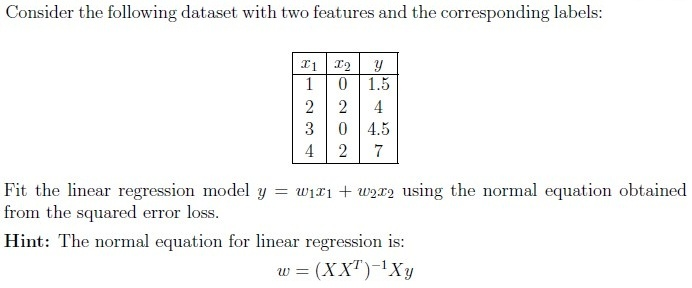
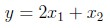
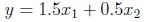
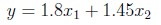
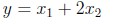
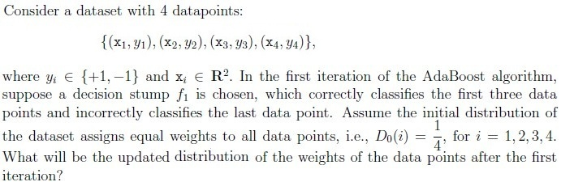
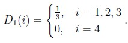
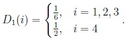
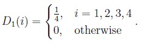
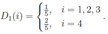
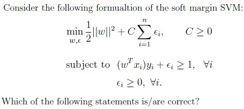
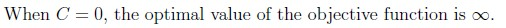
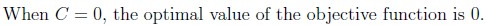
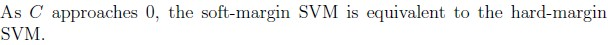
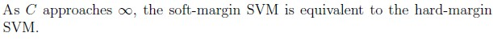
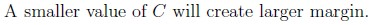
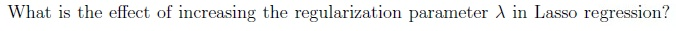
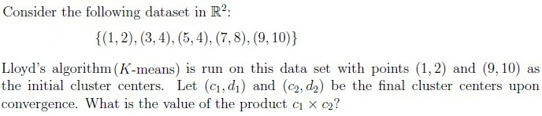
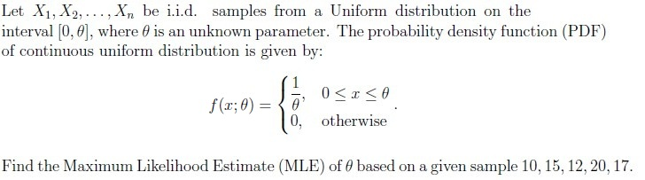
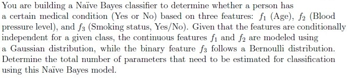
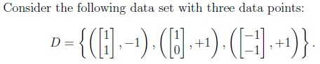
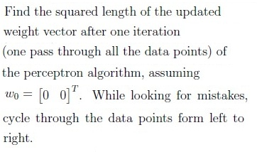
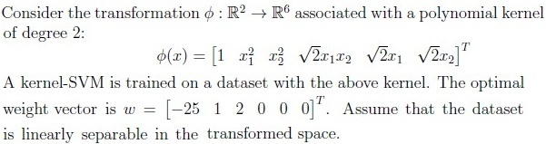
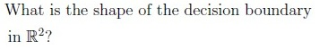
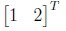
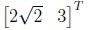
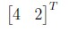
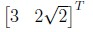
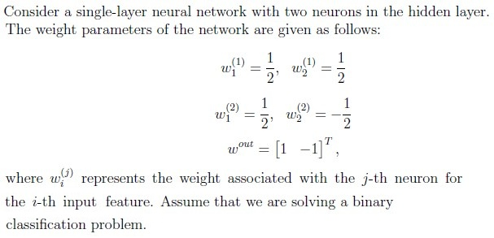
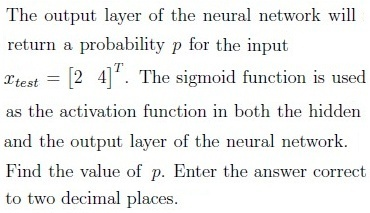
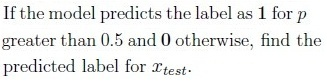
Auto-generated summary from the source site. Handy as a checklist; the lessons above explain each idea from scratch.
Here’s a structured summary of core topics, concepts, principles, and equations for the Diploma-Level Machine Learning Techniques exam, along with Mermaid knowledge graphs to visualize relationships.
k-Nearest Neighbors (k-NN)
+) if ties occur.k smooths decision boundaries (reduces overfitting).Linear Regression (Normal Equation)
Ridge Regression (L2 Regularization)
Effect of λ:
Lasso Regression (L1 Regularization)
Effect of λ:
Support Vector Machines (SVM)
Effect of C:
AdaBoost
where .
Decision Trees
d, number of leaves = .K-Means (Lloyd’s Algorithm)
Steps:
Principal Component Analysis (PCA) vs. Kernel PCA
PCA:
Kernel PCA:
Naïve Bayes
Parameter Count:
Maximum Likelihood Estimation (MLE)
Bagging (Bootstrap Aggregating)
Key Ideas:
Perceptron Algorithm
Single-Layer Neural Network
Architecture:
| Topic | Equation |
|---|---|
| Linear Regression | |
| Ridge Regression | |
| Lasso Regression | |
| SVM (Primal) | |
| SVM (Dual) | |
| AdaBoost Weight Update | |
| PCA | (where = eigenvectors of ) |
| Kernel PCA | (kernel matrix) |
| Perceptron Update | (if misclassified) |
| MLE (Uniform) | |
| Naïve Bayes (Gaussian) |
k → smoother boundaries → lower LOOCV error.